Stages in Setting up the System
Setting Up the Dispatcher System - Details
Running Stage1 — Editing the panel and producing the transits
Setup two or more trains at once
Dispatch or run a train directly
Example: Run a train between two stops (stations)
Modifying the Behaviour of Running Trains
Modify Stopping Distance on one Transit
Modify the wait time at a particular station approach
Setting Station Direction at a Station
Setting the Station Direction using a block
To save the set of scheduled trains
To retrieve a set of scheduled trains
Setting Departure Times Manually
Setting Departure Times Automatically
Run Train on Route to Set Journey Times
Initialisation: Change Running Period Parameters
1) Set the time to a period within the running period
2) Start the scheduling of the trains
Remote Timetables triggered by MQTT
Generating the MQTT Node Red code
Setting up the required Node Red environment
Setup a MQTT Connection in JMRI
Adding New Stations or Track to a Completed Panel
This is an automated system designed to enable you to run trains using the Dispatcher system between locations (normally sidings or stations, but really any set of blocks) designated by yourself.
Provided you have set up a system as described in System Requirements, by pressing a few buttons on theSystem Generation Panel, a complete system will be set up for you complete with Transits, Train Info files, and buttons for you to press which will route trains across your layout.
A network will be set up behind the scenes which will find the best route from the train's location to the required location, and set in place a set of transits which will guide the train to the required location.
The train will either stop at all stations on the route, or travel without stopping at intermediate stops, depending on whether express or stopping mode is selected
Provision is made for multiple train operation, the trains stopping for each other. This is a feature of Dispatcher, but the system allows easy selecting of each train to control each one.
Stages in Setting up the System
There are two stages to set up the system for automatic train running:
Fulfil the prerequisites, which include having speed profiled your locos that you wish to run with the system
- Start JMRI with a panel loaded.
- The panel should have:
- SignalMasts
- No SignalMast Logic (if there is any they will be deleted and replaced)
- No Transits (if there are any they will be deleted and replaced)
- No Train Info Files (if there are any they will be deleted and replaced)
In addition the block table should have been edited to indicate the blocks where the train should stop
These requirements are explained in detail below.
To run Dispatcher System:
- Bring up the Dispatcher System Panel
- Run Stage1 to generate everything to run Dispatcher between stations
- Run Stage2 to check the dispatcher options
- Run the trains using the commands on a newly produced command panel
Prerequisites
To use the Dispatcher System there are several prerequisites
- You should have set up the system with signal masts
- The locos you want to run on the system should be:
- entered in the Roster
- set up with a speed profile
- the required stopping places (blocks) should be indicated by entering stop in the comments field for the appropriate block
- Provision is made for a station announcement to be made when a train enters a station.
- If the block name is unpronounceable, a good stop name can be entered in the comments field for the departure announcements
- Typical blocks comments would be
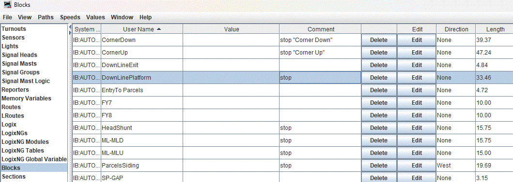
Setting Up the Dispatcher System - Details
Running Stage1 — Editing the panel and producing the transits
Run DispatcherSystem.py in the main jython directory. You will get something like this:
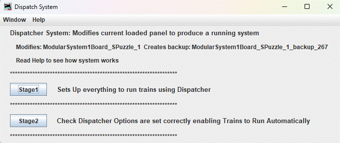
You are prompted to run Stage1 which adds all the icons required to run the system on a new pane, and generates transits
If the old panel name was WR.xml, the new panel will be backed up to WR_backup_xx.xml where _xx is an incremental number which is added if previous backups exist
Some checks are done first, we check that:
- All blocks have a sensor
- No two blocks have the same sensor
- stops are set up
- all blocks have lengths
If all checks pass we get a message:
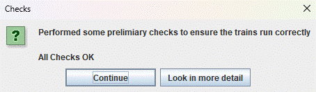
Further details of the checks can be viewed if required. If the checks do not pass details of the errors are given.
If no trains are present in the roster with speed profiles, this will be picked up at run time, and can be corrected then.
The following items are then produced automatically, with countdown timer showing the progression
·A backup of the existing panel
· The changes to the panel with the stopping points and stopping sensors
· The signal logic to operate the signals
· The required sections
· The transits and train info files required to move trains between stopping points
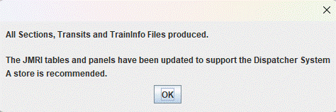
It is recommended that the panel is saved after testing. The current filename can be used if desired as a backup has been done automatically.
Running Stage2 Final Checks
Click Stage2 and one gets two screens, one opening the Dispatcher options screen and another saying the options that need to be set for the Dispatcher system to work
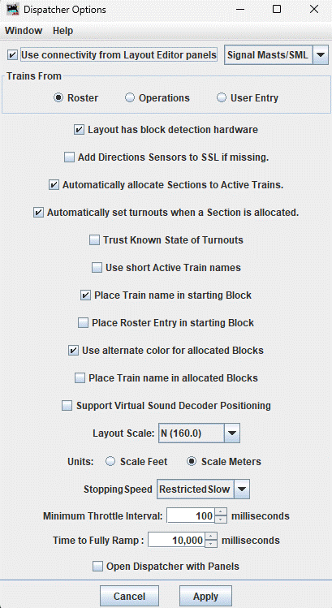
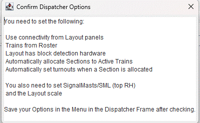
Set the required option and we get a message reminding you to save the changed options
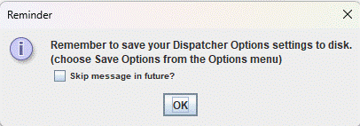
Select the dispatcher window that has opened automatically and click => Save Options
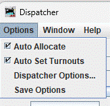
Starting the Program
The program needs to be started. The program is a Jython script, which is started from the Disptatcher System Window which has been produced in the previous stages.
Starting the Program
You will notice several buttons in the top RH corner.

The first two (run and stop dispatcher system) start and end the threads required for the program to run. The threads need to be in operation for the other buttons to work.
While operating the dispatcher system, if you have the thread monitor running (Panels => Thread Monitor) you can monitor what processes are running.
The thread monitor will look like the following once the system is started
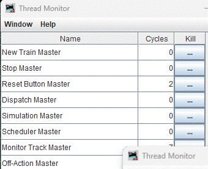
Press the run button. The Express Train and the Run Dispatch options will be highlighted and the run Dispatch option will cause the following prompt to be displayed:

Running the System
To run the system the following needs to be set up
- Place a train on the layout. If you wish to simulate the train to get an idea of how the system will operate click the bottom left button of a station which will make the station occupied.
- Register the train with the dispatcher system telling the system what way it’s facing so the system knows what transit to use to move the train (forwards or backwards). Press the 'Setup Train in Section' button to do this.
- Run the train. This can be done in several ways.
- Setup a Dispatch. Click the Run Dispatch Button and click a station button and specify which registered train will move towards that station
- Setup a Route and run the route. A Route consists of a path joining several stations. The stations joined can be anywhere on the layout no matter how far apart they are, and the system will find valid paths between the stations.The station buttons can be used to either setup a dispatch or setup a route depending upon whether "Setup Route or "Run Dispatch" is selected. The route is run by pressing the "Run Route" button.
- Setup routes, Setup Scheduled Trains and then start the scheduler.
- If a physical train is on the layout at the start of the dispatch the train should move. If you have just made the block occupied with no physical train you can press the 'Simulate the Dispatched Train' button to get an idea of how the train will run. The train will simulate much quicker than a real train and takes no account of the train length.
- Announcements can be activated by pressing the 'Enable Announcements' button. This is off by default as they can get a but irritating.
We go over each of these stages in detail below:
Setup or Register a Train
The first step is to register a train in a siding or at a stop. If you are simulating the system to see whether it will work before running trains you may press the bottom left hand small button which will make the section occupied. Drive a train to the required stop, and press Setup Train in Siding.
We need to tell the system which way the train is pointing.
- At a siding it's easy there is one direction the train can go, and we say which way it is facing out of the siding
- At another stop we have to indicate which way we are talking about and we highlight one direction
suppose we have the following layout with a train in Siding One
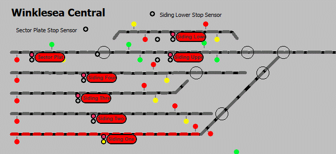
Choosing the Train
We click “Setup Train in Section”
If the train is Siding One as indicated one gets the following message
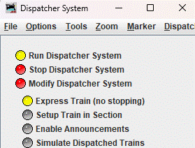
A facility exists to set up several trains at once. Assume for now we are setting up just one train. Click the 1 train button.
A dropdown with the blocks containing trains that have not been assigned. Choose the block you wish to assign a train to.
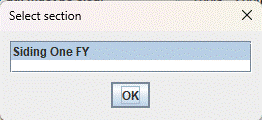
You get a list of unassigned trains with speed profiles.
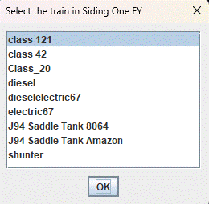
Select the train that is in the block selected (in our case Siding One)
Register the Direction the train is facing.
A block next to the selected block will be highlighted:
The following message then pops up
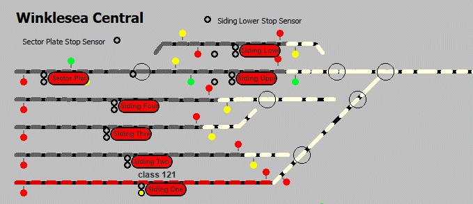
Select the correct direction and click OK.
The train will appear in the memory location for the block.
A message giving the default length of the train will appear in scale metres and the equivalent for the scale chosen in cm and inches. Note the scale is set in Preferences:Warrants:
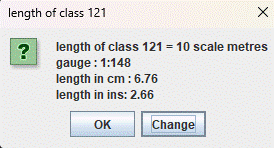
Set the length of the train to the actual length. This will be used to stop the train accurately.
A message giving the speed factor of the train. If the train runs too slowly increase the speed factor, if it runs too fast, decrease it. Normally it will not have an effect if you increase by more that 20%.
Setup two or more trains at once
If you wish to setup two or more trains at once, or if you always setup certain trains at a given starting position, an alternative way of proceeding is provided.
Suppose we wish to setup trains at Siding 2 and Siding 3.
Position trains in the blocks (or of simulation click the occupancy buttons to the bottom left of the red buttons).
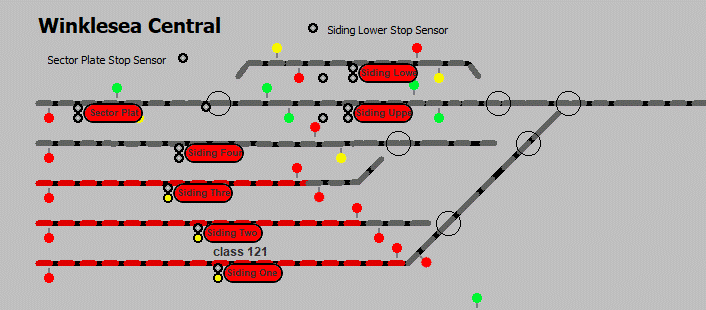
Click Setup Trains as before:
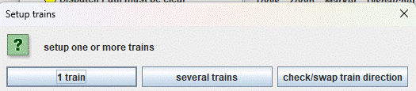
Click several trains. The following screen appears:
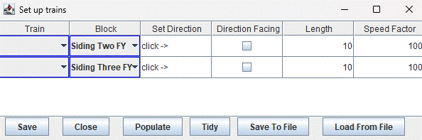
Rows appear for the two blocks that have non-allocated trains.
Select the trains from the dropdown menus
Click -> means click the direction Facing selection box in the next column. When this is clicked, the next block to the occupied block is highlighted as before and the directions selected populate the set Direction column. The Length and Speed Factor can be changed by editing the values given.
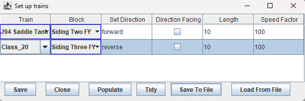
Click Save, and the trains will be shown in the panel.
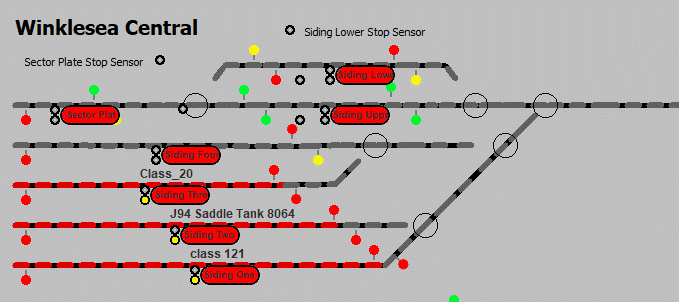
Dispatch or run a train directly
To set up a dispatch a train must have been registered with the system, as described in the previous section, and located in a stop)
Clicking the red buttons when the Run Dispatch option is selected will allow a train to run between any two stations. The shortest route (using the lengths of the blocks) will be found. If the route requires the train to reverse then the system will cope with this. There are two options allowed Express where the train stops at the minimum stations possible or stopping when the train stops at all stations en-route. We will be running the train in express mode.
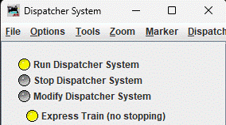
If you wish to run in stopping mode deselect the above buttion.
Example: Run a train between two stops (stations)
Suppose one has the following layout with a train in siding1. Suppose we wish to move the train to Upline Platform (near the bottom left of the panel).
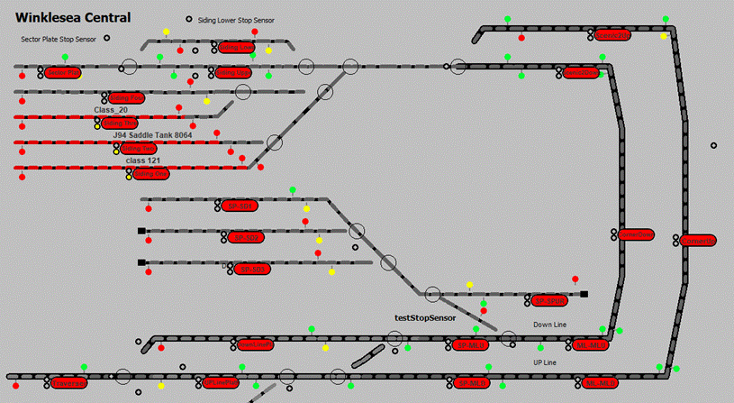
To move the train to a station click the destination station, ensuring first that the option Run Dispatch is selected (this option is selected at startup, but may be deselected if other operations have been utilised.
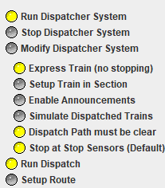
We wish to move train class 121 from Siding 1 to UpLinePlatform. Click the UplinePlatform button. A prompt appears with the trains registered on the system. Select the one you wish to move and press the mode you wish the train to move in express (stopping in the minimum number of stops) or stopping (stopping at all stations en-route).
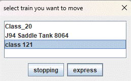
Select the required train from the drop down, and a dispatch will be set up to the required stop (UpLinePlatform).
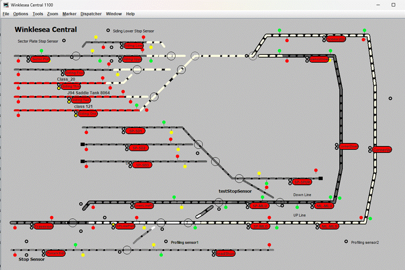
The train will start moving, and the speed indicated in the Auto trains window.
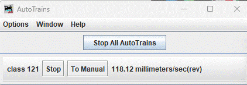
If you are simulating the movement of the train, then the Simulate Dispatched Trains button must be selected before the simulated movement starts.
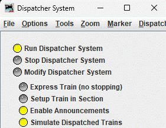
Routes
If you wish to do something more complicated that stop at no stations or all, then routes are useful. With routes you can specify several places that the train will stop off at en-route to the destination, and not just all or none.
Setup a Route
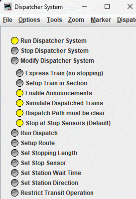
Click 'Setup Route'. Run Dispatch will be deselected, and Setup Route Selected. The following message will be displayed:
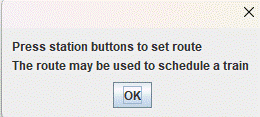
Suppose we wish to send a train from Siding One to Upline Platform stopping at CornerUp
We need to select the following stations in order
· Siding One
· Corner Up
· Up Line Platform
Select Siding One. The following popup will be displayed
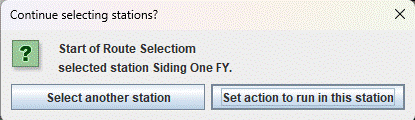
Actions or special scripts can be run at stations of a route. We will describe these later. Select ‘Select another station, and press Corner Up station
We get the following:
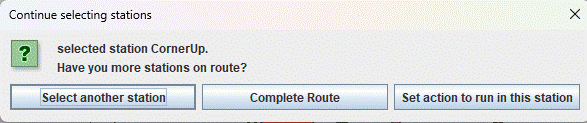
Press Select another station, click UpLinePlatform, then press Complete Route. The route is created and confirmation is acknowledged.
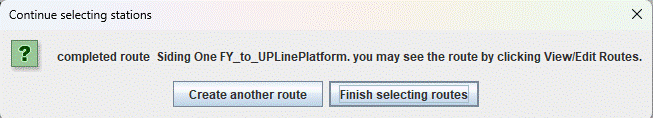
Another route may be created, or here we press Finish selecting routes. The setup Route button is deselected. To run a dispatch or setup another route the appropriate button must be selected.
View/Edit Routes
View Routes
To see the route that has been created press View/Edit Routes
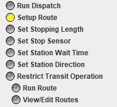
You will see something like this:
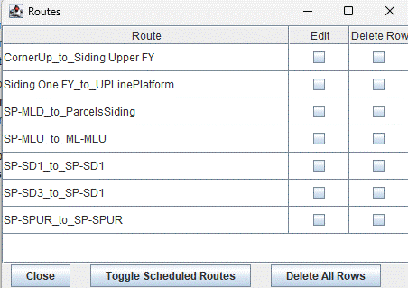
If you press Toggle Scheduled Routes you will see only the scheduled routes. Suppose we had two scheduled routes (see later for description) you would get the following when pressing that button. If you have no scheduled routes then you will get a blank window.
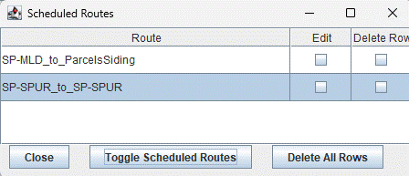
Click the edit button in the row of Siding One FY_to_UplinePlatform and you see:
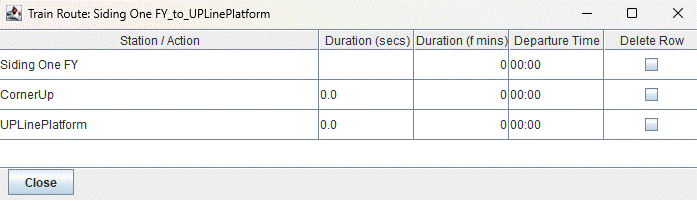
The amount of time spent at each station (Duration) is seconds and fast minutes are needed to calculate the Departure time required for scheduling trains. These are not needed at this stage so we ignore them.
· For now, note that the route stops at the stations we requested, Siding One. Corner Up and Up Line Platform.
Editing the route
If you wish to delete a station from a route you may select the route as shown in the previous section, and press the delete row check box for the station you want to delete.
For example clicking the delete box for CornerUp will give you:
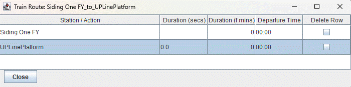
Which does not stop at CornerUp.
If you wish to add a station, no facility to do this is given within Dispatcher System per se, and the advised action is to build another route from scratch.
Note: For Experts: Dispatcher System uses Operations Pro to create routes, and the routes can be edited more fully within Operations Pro: Routes
Run Route
To run a route a route must already have been set up. Click Run Route
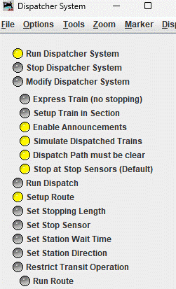
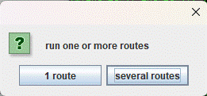
You will be prompted to run one or several routes at once.
Run One Route
Select 1 route, You are prompted with the train to move. If the train is not at the start of the route it will move to the start before running the rout.
You will be prompted with all the trains you have set up
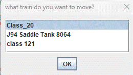
Choose the train class 121, a list of routes are displayed.
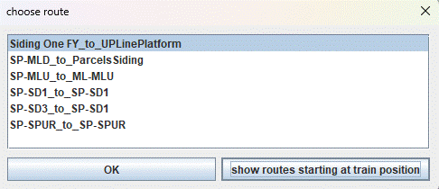
Select show routes stating at train position.
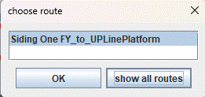
We see that train class 121 is at the starting position of route Siding One FY_to_UplinePlatform.
Select OK.

Select whether you want to
· Run the route and stop
· Run the route and return to the start position (not necessarily along the same route, but the shortest route)
· Run the route, return to the start position and repeat
We will select stop at end of route
The train route is setup and the train starts moving along the route.
Run Several Routes at Once
Click Run Route. You are prompted for
Click several routes
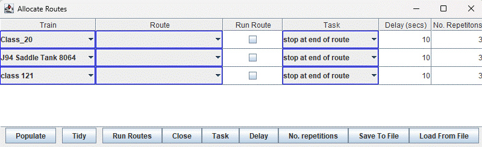
The above panel appears populated with a row for each train that has been setup in the previous section. Allocate routes to each of the trains that you wish to move. The default is for the train to wait 10 seconds before moving the train. Change this as required. If the task chosen for a train is to make several repetitions, the no of repetitions in the last column will be used. We may specify for example
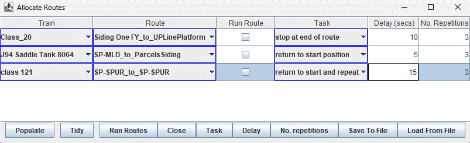
Note that the trains will move in the order J94, Class_20, Class 121, and the route SP-SPUR_to_SP-Spur will repeat 3 times.
Note that Class_20 will run its route Starting from Siding One, whereas J94 will move to SP-MLD first then run the route from SP-MLD to Parcels Siding, similarly Class 121 will travel to SP-SPUR before running the route.
We will go over both options: ‘Several routes’ is used to run several routes setting off at the same time.
Modifying the Behaviour of Running Trains
Provision is made to:
· Change the position where the trains stop, (using a stopping sensor or vary the calculated stopping length)
· Change the wait time in each station
· Set track to one way operation
· Stop transits starting for certain conditions. This will allow you to ensure that trains do not get trapped by other trains
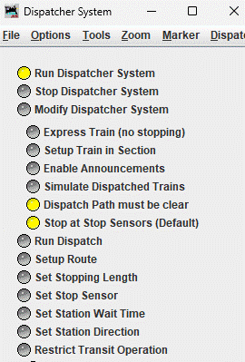
The buttons Set Stopping Length through to Restrict Transit Operation are used.
Set Stopping Length
When a train stops at a station the stopping distance is calculated using the lengths of the blocks in the last section. If the train stops short or overruns, this distance can be changed.
Click Set Stopping length.
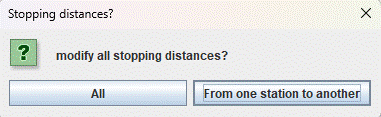
The option is given to modify the stopping distances for all transits or just the stopping distance for one transit (from one station to another)
Modify All Stopping Distances
This modifies the stopping distance for all transits. Press All.
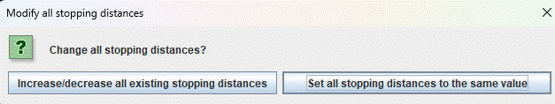
You may either
· increase or decrease existing stopping distances by the same amount, or
· delete any existing stopping distance changes, and increase or decrease existing stopping distances by the same amount
If we keep existing changes, but modify by a bit, press Increase/decrease all existing stopping distances
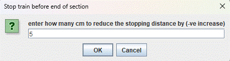
Enter the amount to decrease the stopping distance by
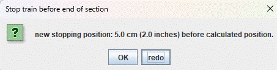
The train will now stop 5 cm short of the previous calculated position.
Setting all stopping distances to the same value is similar.
Modify Stopping Distance on one Transit
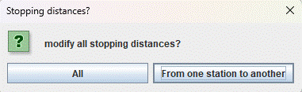
Click From One Station to Another.
You need to specify a transit going towards the station, so we select two stations, the first the start of the transit, the second the end.
Suppose we want to change the stopping distance for transit going from SP_MLU to DownLinePlatform.
Select SP_MLU,
then DownlinePlatform.
Click Modify Length
Specify the distance that the train will stop short of the calculated stopping distance
Set Stop Sensor
Click Set Stop Sensor
Suppose we wish to set stop sensor SidingLowerStopSensor at station Siding Lower FY, to operate when going in the direction Siding2Down to Siding Lower FY.
Click Set at particular station
To specify the direction first click scenic2Down
Press ‘select next station’ then then the station containing the stop sensor, Siding Lower FY
Click Set stop Sensor
Select the required stop sensor from the dropdown, in our case SidingLowerStopSensor and click OK
The set stop sensor routine finishes
To check that you have set the sensor correctly select Set Stop Sensor again
It shows correctly that the section SD_FYa:SectorPlate3a has the stop sensor SidingLowerStopSensor. All trains stopping at that section will stop at the stop sensor, provided the “Stop at Stop Sensos (Default )”button is enabled
Set Station Wait Time
The station wait times may be modified for all stations / stops, or at particular stations.
Click ‘Set Station Wait Time’
The following screen appears
Modify all station wait times
Click All
The following screen appears
Either increase/decrease all wait times by same amount, or set all to same value
If setting to same value, click appropriate button, the following appears:
Set the number of seconds to wait at station, and click OK
Click OK
Modify the wait time at a particular station approach
Click ‘At particular station’. The following screen appears:
Click a station on the approach to the station whose wait time we want to set.
Suppose we wish to set the wait time at station Downline Platform from direction SP-MLU. Click SP-MLU
Select station DownLinePlatform
Click Modify Station Wait Time
The value is 5 (from the previous action of setting all wait times), set it to 3 say
Set Station Direction
Setting Station Direction at a Station
The setting of station direction is best illustrated by an example.
On the following UK layout we wish to go from Siding One to UplinePlatform Via CornerUp, because we travel on the left, but the shortest route is via CornerDown. To make the train travel via Corner Up we have to make travel at CornerDown station one way in the direction of Siding One.
If you are happier you could enforce one-way working at both CornerUp and CornerDown, but the above argument shows that we only need to do so at the leg with the shorter length.
Setting the direction at CornerDown.
Click Set Station Direction
Click Set at particular station
Click CornerDown
Select Scenic2Down
Click Allow only the direction from CornerDown towards Scenic2Down.
The one way working is stored in the Train Info files. These are regenerated.
To confirm what we have done, Click Set the StationWaitTime Button again
We see we have set one-way working in the direction CornerDown to Scenic2Down
Setting the Station Direction using a block
This is used where there is no station in the area required to be one way working, no possibility of putting one in (the area contains a turnout) without putting in extra blocks, or just no desire to have a station in the area.
The system of setting station direction using a block was designed for a system where the area of one way working had no possibility of putting a station in, but we will illustrate it by setting the block containing the station CornerUp to one way working, assuming that the stations Scenic2Up, CornerUp and ML-MLD do not exist.
The block CornerUp is highlighted.
Click Set Station Direction
Then click Set At Block,
Click OK
select block CornerUp, then click OK
The two neighbouring blocks are shown
Select ML-MLD
Click Allow only the direction from CornerUp towards ML-MLD (UK trains run on the lefthand side.
The trainInfo Files are regenerated, and if one clicks Set the StationWaitTime Button again
You get
Click x to close.
Restrict Transit Operation
Introduction
This operation is best described by an example. Consider the following layout:
DownLinePlatform and UpLinePlatform are terminus stations
(with a traverser at the end hence the continuations to the left). There is no
easy way to set up a Traverser at the moment under Dispatcher, though it can be
done with points and some Logix),
Consider the situation where trains are in Down and UpLinePlatforms. We are in
the UK where trains travel on the left, and the train in UplinePlatform wants
to move to DownlinePlatform, where it will pick up passengers before travelling
in SP-MLU direction. To do this it will travel to SP-MLU and then to UplinePlatform.
If there is a train in UplinePlatform, this train will be trapped by the train in SP-MLU. To avoid this we need a rule, do not go on the journey UplinePlatform – SP-MLU – DownLinePlatform if there is a train in DownLinePlatform.
Creating the required Rule
Click Restrict Transit Operation
Click Set Transit Restriction
Click OK, Select the start and end of the transit.
Click UpLinePlatform
Click Nest Station, and Click DownLinePlatform.
We get an error. Our reasoning is incorrect we must select SP-MLU, and apply a rule:
Do not go on the journey DownlinePlatform-SP-MLU if UplinePlatform is occupied
Select TryAgain, and Select SP-MLU
Press Select Station to Select its Block. Select Station UpLinePlatform
Click Restrict This Transit
To see what we have done, click Restrict Transit Operation again and we get:
If you have made a mistake, remove the transit restriction, otherwise Click Cancel
Scheduling
Trains can be scheduled to run at specific times over routes. In the schedule table the trains on the routes are set to run at specific start times. They can then be set to run just at that time or at intervals based on that start time, say every 20 minutes.
The running period per day can be set from say 4am to 11pm, and the fast clock set to a rate within that period, and optionally at a faster rate outside that period (during the night).
Timetables can be set up to display the schedules trains, For timetables to work the start time of each station on each route that is scheduled needs to be set up. This can be done manually or automatically, the latter by running a train over he route using a special routine.
Timetables can be displayed locally on the computer running JMRI, or on remote computers/tablets communicating via MQTT usually over a local network.
The schedules are set up from the Dispatcher panel. At the bottom of the panel you see the following screen.
Click “View/Edit Scheduled Trains” and a screen pops up similar to the following:
Adding Schedules
Press the Add button. A row is added to the screen
Press the dropdown for route
Select one of the routes that have been set up. We select Siding Ine FY to UpLinePlatform.
Press the dropdown for Repeat
We have the options of running just at the given time, or repeat at given frequencies, Once, Every 20 mins, Every 30mins, Every Hour, or Every 2 hours. We would like the train to repeat every 30 mins, so we select that.
Set the time. The hour is ignored if we are running at a set frequency, so we can leave it at 00, (note if we have set to Once, the hour is used). We set the minutes to say 2 minutes past the hour so the train will run a 2 and 32 minutes past the hour. Double click the time to set.
The train name is filled in automatically for you, and you may leave it at it is. It will be displayed on the timetable (see later) so you may wish to enter a special name for the train. We leave it as train one for now.
Edit Route displays the stations on the route, and allows us to enter dispatch times, which will be explained later.
Delete Row deletes the row without warning, so if you have several trains dispatched, it may be best to save these to file to avoid having to type them in again.
Delete all Rows does what it says.
The Repeat button toggles all the entries through Once, Every 20 mins, Every 30mins, Every Hour, or Every 2 hours
Save to File saves the entries to file, Load from File allows you to load previously saved schedules, and wipes out existing ones
Saving Schedules
Click the save button to save the schedule. Only valid complete rows are saved.
To save the set of scheduled trains
Press save to file, and select an appropriate file name
Only complete valid rows are saved
Save to my_saved_file_1
To retrieve a set of scheduled trains
Press Load from File. Beware this will overwrite the existing schedules. It may be advisable to save the existing schedules to file before doing this.
Click the required file (here there is only one). The saved file will be loaded into
Setting Departure Times
If departure times are set for stations on a route, then the trains will wait till the departure time, before setting off. Also the departure times will be shown on any timetable for that station
Setting Departure Times Manually
Click Setup departure Times
Then click set departure times
If we set departure times for stations along a route, then the train will not depart from the station before the departure time.
Note that we are running at the default fast clock 1:10.
Note that if actions such as bell.py are present in the route, no departure times or durations are indicated for these.
The duration is defined as the time the train takes to travel between the previous station and the current station plus the wait time in the station. It is displayed in real seconds and fast minutes. The departure time is calculated automatically from the durations (and vice-versa).
We can either enter the journey times in real seconds, or the durations in fast minutes
We could now run a train over the route, measure the time taken, and enter the durations in fast minutes. Alternatively you can note the time the train arrives at the station, and add a bit to allow the train to wait.
For example we enter 3 and 5 for the durations in fast minutes and (and toggle journey/wait times and getget:
The departure times or durations update automatically.
We note that if we enter durations in seconds they are rounded down to the lowest 6 seconds
If you experiment you see that you can toggle the journey/wait times once more and enter the journey times in seconds
Setting Departure Times Automatically
To make it easier to obtain the durations the train can be run over the route, and the durations recoded automatically. The wait time in all or individual stations can be set so that the duration can be calculated (journey time + wait time) and stored.

To do this press Setup Departure Times. You get the options:
Set Wait Time in Stations
This sets the default wait time in all stations. (in real secs). It can be overwritten in set departure times for a particular route.
Note that the wait time will be rounded in practice to the nearest fast minute. At 10 times normal speed 1 fast minute will equal 6 seconds.
Run Train on Route to Set Journey Times

Pressing this option allows you to select a route to run. (An engine needs to be at the start of the route, and the engine need to be assigned using the setup button before running this routine).

Pressing “Run Train on Route to Set Journey Times” brings up something like the following dialog:
Select Siding One FY_to_UplinePlatform
Click Check train in required station, ensuring first that a engine is setup in (in this case Siding One FY).
The train will run over the route and record the time taken on each leg of the journey
After the train has run the journey times will be entered
The procedure will be repeated for all routes for all scheduled trains
Run Scheduled Trains
To run the scheduled trains, we need to set up the running period in the day, then start the clock at the beginning of this period.
Click the Start Scheduler Button. The following screen pops up:
The analogue clock also appears set to 00:00.
Initialisation: Change Running Period Parameters
Click “Initialisation”, A set of input boxes are displayed to enable setting of:
· The start of the running period
· The end of the running period
· The fast clock rate during the running period
· The fast clock rate outside the running period
Defaults are set and can be left as is for initial testing
Start the Scheduled Trains
1) Set the time to a period within the running period
Click “Set Time”, The clock moves to 5 minutes before the start of the running period. It moves to the start of the running period at the fast clock rart for outside running times, then at the start of the running period, it changes to the running period fast rate.
2) Start the scheduling of the trains
The trains will be scheduled according to the schedule table, and any timetables set up (see later) will be populated with the scheduled trains for the next 3 hours.
3) Start the clock
The clock is initialised to stop when the start scheduling button is pressed. Click Stop/Start to restart the clock.
The trains will start scheduling
Stop Scheduling Trains
Click the Toggle button to stop scheduling trains and to restart scheduling
Timetables
A local timetable of any one station can be shown on the computer running JMRI. This is denoted as a local timetable.
Timetables can also be shown on remote tablets/computers. These are denoted MQTT timetables as they communicate with each other using MQTT.
Click the show timetable button.
A popup allowing the choice between a local timetable and MQTT timetables. MQTT timetables require some setting up. The local timetable works straight away.
Local Timetables
Select the button “select station for local timetable. The following pops up:
Select the required station that you want to display the timetable for. Note that only stations at which a train stops on a scheduled route are shown. (if a different station could be selected the displayed timetable would be blank).
A screen will be displayed reminding you that for timetables to be displayed the trains must be scheduled and the scheduler be running. If these conditions are satisfied you will get a timetable displayed
You may thus get a message
In which case you need to ensure that the clock is running and the train scheduler is running by clicking the start scheduler button.
A timetable similar to the below timetable will be shown:
Remote Timetables triggered by MQTT
To display a timetable on a remote tablet or computer screen, we need to:
1) Set up the required MQTT environment using Mosquitto and Node Red on a local or remote computer
2) Set up a local or remote network connection
3) Setup a MQTT connection in JMRI
4) Generate the MQTT Node Red Code
5) Import the code to node red, and perform a trivial edit
6) Get the appropriate page on a browser to display the timetable
These timetables were inspired by a Rocrail MQTT implementation and modified from that implementation. The Rocrail implementation and hence the JMRI Node Red implementation is licenced as follows: CC Attribution-Share Alike 4.0 International.
Generating the MQTT Node Red code
Click select station for MQTT timetable
Select the required station
Provision is made to display an icon on the timetable. At present you can add a British Rail logo, a Deutsches Bahn logo or none.
Select the logo required and click Generate Timetable.
It is hoped that users will submit modifications to JMRI to add other emblems for different train operators.
Notification that a node red file has been produced in the user files directory
Setting up the required Node Red environment
Set up a MQTT broker such as mosquito on the same machine as is running JMRI, or one that is connected on the same network. You may use the instructions given in Eclipse Mosquitto if desired.
Set up Node Red as given in Node-RED (nodered.org). Note that if you are using a raspberry pi, with some installations Node Red comes installed. Note that there are many tutorials on this site which give you a good introduction to Node-red.
Start Node Red in a command file and start node-red in a browser using http://localhost:1880 or similar. Import the node-red file generated in the previous section
If you get the message
Click import copy
Open the web socket node as detailed in the comment. In this case it is the node labelled [ws] /ws/CornerUp. Double click that node, and you will get something like:
The path will not have been set to the correct value. Click the pencil to the right of the path, and enter the correct value /ws/CornerUp in our case.
Click Update Done and Deploy
The blue dots will dissapear.
Setup a MQTT Connection in JMRI
A MQTT connection needs to be set up in JMRI to connect to the MQTT broker. Follow the instructions in the JMRI help. You will get something like:
Reboot JMRI
Display the MQTT timetable
Display the MQTT timetable by going to a browser and displaying http://localhost:1880/StationName. For example if the station name is Siding One FY, then you enter http://localhost:1880/Siding One FY
If the timetable does not appear ensure node-red is started, for example in windows
You should get something like:
Adding New Stations or Track to a Completed Panel
To add a new station or track
Edit the panel and add instructions to add any new stations:
- the new stations must be entered in the block table as described in a previous section
- open the new panel in panel editor, and change the panel to add new track and/or signals as required
Run the dispatcher system
- open the new panel, and re-run dispatcher system. If you have created a version of Dispatcher system before, and the trains were running OK, then you do not have to run stage 2, just Stage 1
- All the previous stations and icons will be removed, and new ones added automatically
Save the new panel, and restart JMRI.